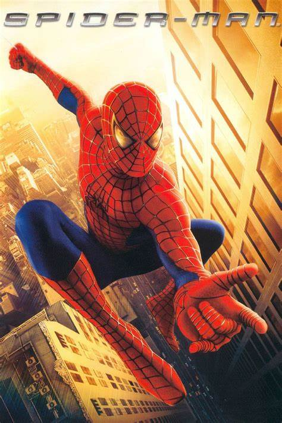
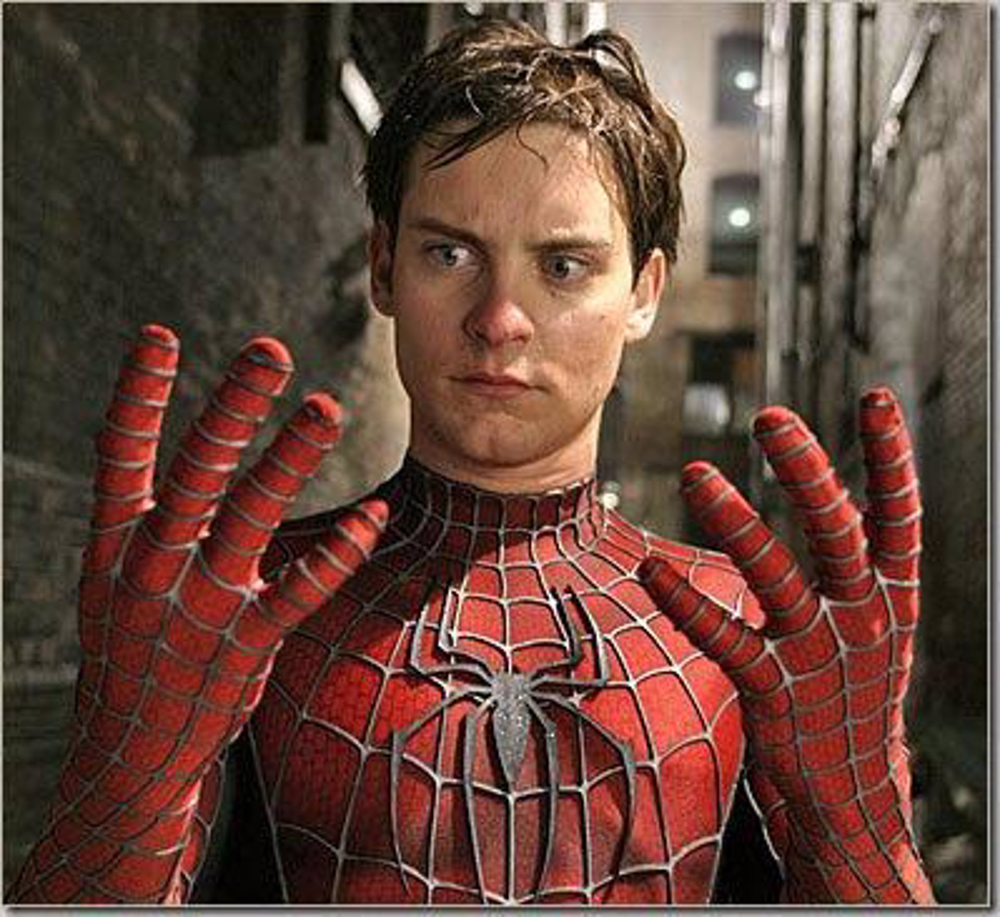

Año de publicación: 2002
Productores: Columbia Pictures, Sony
Imagenes
 Reseña: “Spider-Man”, estrenada en 2002, es una película que captura la esencia del superhéroe arácnido con una mezcla de acción y humanidad. Dirigida por Sam Raimi y protagonizada por Tobey Maguire como Peter Parker, la película narra la transformación de un estudiante tímido en el valiente Spider-Man tras ser mordido por una araña genéticamente alterada. La película destaca por su habilidad para equilibrar las emocionantes secuencias de acción con momentos de desarrollo de personajes y drama personal. Maguire brilla en su interpretación de Peter Parker, entregando una actuación que aporta profundidad y vulnerabilidad al personaje. La relación entre Peter y Mary Jane Watson, interpretada por Kirsten Dunst, añade una capa de emotividad y conexión con el público. El antagonista, el Duende Verde, interpretado por Willem Dafoe, proporciona un contrapunto oscuro y complejo a la luminosidad de Spider-Man. Las escenas de lucha entre ambos son visualmente impresionantes y llenas de tensión. A pesar de algunas críticas hacia las secuencias de acción que pueden sentirse algo desconectadas de la realidad, “Spider-Man” es alabada por su capacidad para mantenerse fiel al material original de los cómics y por su corazón, gracias a la combinación de los encantos del director Raimi y la estrella Maguire
Calificación: 10/10